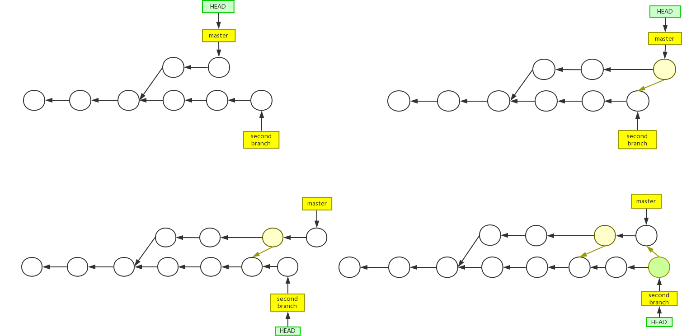
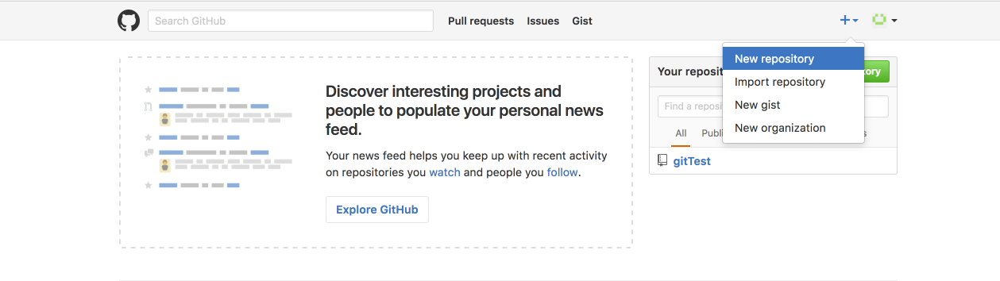

第一部分 Git基础知识
1.1概述
- 在实际项目开发过程中，不可能是由多个人共同负责一个项目，需要进行团队合作开发，需要将代码进行同步更新
- CVS: 最开始使用CVS进行版本控制，但是CVS设计并不完善，除了需要保存真实数据外还需要保存一些非必须的数据文件
- 版本控制发展历程:
- 本地版本控制系统: 复制整个项目工作目录来保存不同的版本，在本地使用简单数据库记录文件的修改，简单易用但是不易跟踪数据和恢复数据
- 集中版本控制系统: 服务器保存文件修改历史，客户端通过网络连接服务器，取出最新文件或者将本地提交更新到服务器，版本库只保存在服务器中
- 分布式版本控制系统: 版本库不仅仅保存在服务器中，每个客户端都有一份完整的拷贝，主服务器出现故障通过任一客户端都可以进行版本的恢复
- git特点:
- 快照存储，而不是比较各个版本的差异进行差异存储

- 断网同样可以照常工作
- 分支切换的速度非常快
- 快照存储，而不是比较各个版本的差异进行差异存储
1.2 在Windows环境下安装Git
- Cygwin模拟环境: 模拟了Unix系统调用API，在Window下可以运行Linux工具和shell命令
- Wine模拟环境: 模拟了Windows的系统调用API，可以在Linux下运行Windows应用程序
- Msysgit: Git的Windows版本，将git和cygwin一起打包，集成了Git所需要的运行环境和组件，直接安装即可
1.3 在Linux环境下安装Git
- 自动安装命令
- Ubuntu\Debian环境下安装git:
apt-get install git(git-core) - Fedora\RedHat环境下安装git:
yum install git - Mac环境下安装git:
sudo brew install git
- Ubuntu\Debian环境下安装git:
- 源码包安装
- 最新git源码下载地址: http://github.com/git/git/releases
- 安装git之前需要安装其他依赖的包
- 安装libiconv编码转化库
- 源码下载、配置、编译、安装
1.4 仓库的创建和配置
- 创建一个仓库:
git init- 新建一个工作区文件夹，在shell中进入到当前工作区后使用创建仓库命令后会在当前工作区生成隐藏文件夹".git"
- .git文件夹成为版本库，版本库中存放着版本信息以及一系列配置内容
- git配置
- 配置姓名:
git config --global user.name "isyangyuhao" - 配置邮箱:
git config --global user.email "isyangyuhao@gmail.com" - 配置差异颜色显示:
git config --global color.ui true - 设置命令别名:
git config --global alias.alias_name name
- 配置姓名:
- 配置命令自动补全
- 下载配置脚本: http://github.com/markgandolfo/git-bash-completion.git
- 拷贝到用户目录文件并生效:
$echo source ~/git-completion.bash >> ~/.bashrc
- 配置参数选项
--global修改全局配置文件，去配置~/gitconfig--system修改所有用户的配置文件，去配置/etc/gitconfig- 无参数: 修改本仓库配置文件，去配置.git/config
1.5 基本流程与操作
- 在工作区中修改某些文件
- 查看当前状态信息
git status - 查看当前区域与暂存区差异
git diff
- 查看当前状态信息
- 对修改的文件做快照,提交到暂存区
git add file_name - 将保存在暂存区的文件快照提交到版本库:
git commit -m "commit_info"- 在工作区直接提交到版本库(不推荐):
git commit -a -m "commit_info"
- 在工作区直接提交到版本库(不推荐):
- 查看提交历史:
git log [-p] [--oneline]- 查看具体更改历史信息:
git show commit_hash
- 查看具体更改历史信息:
-
克隆远程仓库:
git clone repo_url
通过克隆远程仓库可以将网络上的仓库克隆到本地进行操作，所有文件和操作记录可以共享 - 操作分支
- 查看当期分支:
git branch - 创建分支:
git branch new_branch_name - 切换分支:
git checkout new_branch_name
- 查看当期分支:
- 操作标签
- 创建标签:
git tag tag_name - 查看标签:
git tag - 删除标签:
git tag -d tag_name
- 创建标签:
1.6 基本概念
- 专业术语中英文对照表
repository 仓库,版本库 merge 分支合并 snapshot 快照 ref 引用 rebase 分支衍合 staging 暂存区 bare 裸仓库 cherry-pick 条件分支 SHA1 哈希值 SVN 版本控制系统 squash 压合分支 commit 提交 GIT 分布式RCS checkout 检出 branch 分支 SSH 安全传输协议 revert 反转提交 tag 标签 HEAD 当前分支 stash 储藏 index 索引 pull 拉取代码 master 主分支 origin 远程仓库 push 推送代码 Gerrit 代码审核 - - - 工作目录、暂存区、版本库
- Git本质: 内容寻址文件系统
- 版本库中的文件状态: modified(已修改), staged(已暂存), committed(已提交)
- 工作区中的文件状态: untracked(未被追踪状态), tracked(被追踪状态)
- 索引
- 定义: 索引存储了一个tree对象的所有二进制文件,里边有很多条目,分别指向不同的blob和tree的哈希值
- 索引存放在暂存区,文件修改的内容并没有保存到其中
- 索引是一个包含文件索引的目录树:
- 记录了文件名和文件状态信息(时间戳，文件长度等)
- 文件的内容并没有保存其中
- 文件索引建立了文件和对象库中对象之间的关联
- 版本库目录
版本库子目录 功能描述 branches 项目分支信息 hooks 默认的hooks脚本，由特定事件触发 info 内有exclude文件，指定git需要忽略的文件 logs 历史记录，删除commit对象等 objects Git数据对象: commit, tree, blob, tag refs Git引用: 指向(远程)分支，标签的指针 HEAD 指向当前分支的末端 index Staging area暂存区 COMMIT_EDITMS 最后一次提交的注释 description Git项目描述信息
- git对象模型
- 对象
- 对象类型：blob，tree，commit，tag
- 对象大小：对象数据内容的大小
- 文件名：通过SHA1算法生成文件名
- SHA1对象数据
- 使用40个字符的字符串来表示对象名，目录(2)+名称(38)
- 字符串由对象内容做SHA-1哈希计算得到
- 通过比较SHA-1值来比较两个文件的内容，通过这种方式比较速度非常快
- 不同类型的对象用途
- blob：存储文件数据，通常是一个文件
- tree：类似于一个目录，用于管理tree和blob
- commit：指向一个tree，标记某个特定时间点状态
- tag：用来标记某一个提交(commit)
- blob
- 对象内容全部是二进制格式数据文件，对象名由哈希计算产生
- 查看glob文件内容:
git show SHA1git cat-file -p SHA1
- tree
- tree对象包括mode、对象类型、SHA1值、名字；是一串指向blob或其他tree对象的指针，表示目录树的内容、内容间的层次目录关系
- 查看tree对象内容:
git ls-tree SHA1git cat-file master^{tree}git cat-file -p SHA1
- commit
- commit用来指向一个tree对象
- commit对象的组成: 一个tree对象,父对象(一个项目必须有根提交),作者(修改人名字,日期),提交者(实际提交的人名字,日期)
- 一个提交本身并没有包含任何信息说明做了哪些修改，所有的修改都是通过父提交比较得来的
- 提交commit对象：使用
git commit命令提交，将存储在暂存区的index全部提交，提交的父对象为当前分支HEAD
- 对象
- 引用
- 引用的本质: 引用就是commit的指针,分支和标签都是对提交的引用
- 引用的存放路径: .git/ref
- tag
- 标签对象由对象名、对象类型、标签名、标签创建者名构成，指向一个commit的SHA1
- 标签与分支比较: 都指向一个commit; 标签可以看做常量指针,不能改变; 分支可以看做变量指针,可以改变
- 查看标签信息:
git cat-file -p tag_name - tag分类
- 轻量级tag: 只是一个commit的引用,不是tag对象
- 重量级tag: 是一个tag对象，包含了对象名、类型、标签名、创建者、描述信息、commit引用等更加详细的信息;
创建命令:
git tag -a -m "tag_desc" tag_name
- 版本库引用视图

第二部分 常用操作
2.1 文件管理
- 文件添加
- 作用: 对于已经追踪的文件，将修改从工作区保存到暂存区；对于未追踪的文件，将其加入追踪范围
- 添加某个文件:
git add file_name - 添加所有文件:
git add .
- 文件提交
- 作用: 将暂存区的所有内容提交到版本库
- 单步提交:
git commit -m "commit_info" - 一次性提交:
git commit -a - 修改最后一次提交(通过该方法提交的记录会合并到最后一次提交对象当中):
git commit --amend - 注意: 如果修改唯有保存到暂存区，是不会被提交到版本库中的，除非使用一次向提交
- 文件删除
- 从工作目录中删除,在暂存区保留:
rm file_name - 从工作目录和暂存区同时删除:
git rm -f file_name- 使用这种方式删除可以避免出现在未跟踪清单中
- 使用这种方式删除后提交，文件将不会再被版本库跟踪，但是版本库中仍然有这些文件的快照
- 从暂存区删除，工作目录保留:
git rm -cached file_name
可以将库文件、可执行文件、日志、临时文件等不需要提交的文件从暂存区删除 - 从版本库中删除: 版本回退到错误提交前的版本
- 撤销提交到暂存区:
git reset --soft SHA1 - 撤销提交到工作区:
git reset --mixed SHA1 - 将工作区、暂存区和版本库恢复到指定版本(不推荐):
git reset --hard SHA1
- 撤销提交到暂存区:
- 从工作目录中删除,在暂存区保留:
- 文件重命名
- 文件重命名操作:
git mv old_file_name new_file_name - 执行文件重命名后实际的操作:
- 文件移动:
mv old_file_name new_file_name - 删除旧文件:
git rm old_file_name - 添加新文件:
git add new_file_name
- 文件移动:
- 文件重命名操作:
- 忽略指定格式的文件
- 有一些文件不需要提交到版本库中: 可执行文件、日志文件、临时文件、库文件等
- 通过在仓库根目录创建".gitignore"文件来进行忽略文件的配置
- 忽略文件模式: glob模式匹配
- 以#开头的行为注释
- 忽略所有bin格式的文件: *.bin
- 忽略所有a或b为后缀的文件: *[ab]
- 不忽略某个文件: !main.bin
- 忽略临时文件: *~
- 忽略根目录下的某个文件: /text.txt
- 忽略某个目录下的所有文件: lib/, execute/*.exe
- 撤销提交
- 撤销工作区的修改:
git checkout -- file_name- 让文件回到最近一次commit或add的状态
- 若文件还没有添加到暂存区，撤销后和版本库一样
- 若文件已添加到暂存区，回到暂存区版本状态
- 撤销暂存区的修改:
git reset HEAD file_name
将暂存区的修改撤销掉，重新放回工作区 - 撤销版本库的提交:
git reset --hard SHA1(HEAD^)
回退版本，并刷新到工作区，先前提交的对象还在版本库中存在着
- 撤销工作区的修改:
- 差异比较
- 比较工作区和暂存区差异:
git diff(查看尚未暂存的文件有哪些新的修改) - 比较暂存区和版本库差异:
git diff --cached [HEAD]git diff ---staged SHA(查看已暂存文件和上次提交的快照之间的差异) - 比较工作区和版本库差异:
git diff HEAD(SHA1)(查看未暂存文件和最新提交文件快照的区别) - 比较两个版本之间差异:
git diff SHA1 SHA2
- 比较工作区和暂存区差异:
- 压缩仓库
- 压缩版本库: 在日常使用中git快照会占用磁盘空间,使用
git gc命令压缩存储单元,节省磁盘空间 - 快照的存储: 对于未修改的内容做快照处理并保存;对为修改的文件做引用处理
- 压缩版本库: 在日常使用中git快照会占用磁盘空间,使用
2.2 提交管理
- 查看提交历史
- 显示每个版本的修改差异:
git log -p [-look_number] [--oneline look_number] - 查看每个用户对应的操作记录:
git shortlog - 图形化显示:
git log --graph - 查看某个文件每一行的提交记录:
git blame file_name - 查看某个文件2行到4行的提交记录:
git blame file_name -L 2,4 - 查看某个文件提交修改历史:
git log -C file_name
- 显示每个版本的修改差异:
- git log命令参数
- 展开版本之间的内容变化:
-p - 显示最近n次的更新:
-n - 指定位置开始的第n个提交:
git log HEAD~m n - 两个版本之间的提交:
git log HEAD~n..HEAD - 仅显示行数变化:
--stat - 显示新增、增改、删除文件清单:
--name-status - 仅显示指定作者相关的提交:
--author=author_name - 仅显示指定提交者相关修改:
--committer=committer_name - 指定日志的起点:
git log SHA1
- 展开版本之间的内容变化:
- 提交查找
- 关键字查找
- 查找所有包含"content_value"字符串的文件:
git grep content_value - 显示关键字所在文件的行号:
git grep -n content_value - 不显示内容，只显示文件名:
git --name -only content_value - 查看每个文件匹配的个数:
git grep -c content_value
- 查找所有包含"content_value"字符串的文件:
- 组合查找
- 查找"content1 content2":
git grep -e content1 --and -e content2 - 查找"content1"或"content2":
git grep --e content1 --or -e content2
- 查找"content1 content2":
- 关键字查找
- 修改提交
- 增补提交: 修改最后一次提交，修改提交信息或者内容
git commit --amend - 反转提交
- 将原来的提交撤销掉:
git revert SHA1 - 反转多个提交: 要先反转最后提交防止冲突，此时原操作的逆操作都在暂存区，然后需要重新手动提交
git revert -n HEADgit revert -n SHA1git commit -m "revert HEADand SHA1"
- 将原来的提交撤销掉:
- 增补提交: 修改最后一次提交，修改提交信息或者内容
- 置位
- 复位: 版本会退到工作区
git reset [--mixed] SHA1 - 软复位: 回退版本到暂存区
git reset --soft SHA1 - 硬复位: 从版本库和工作目录中同时删除提价内容
git reset --hard SHA1
- 复位: 版本会退到工作区
- 提交排序:
git rebase -i SHA1 SHA2
进入人机交互模式，手动修改提交的顺序记录，同时修改统一文件的记录修改顺序后会出现错误 - 合并提交:
git rebase -i SHA1 SHA2- 进入人机交互模式，将需要压缩的提交历史将头信息pick改为s即可，提交后跳转到重新编辑提交信息界面
- e.g.
pick 258eba0 修改了.gitignor* s 00685dc alter readme
- 分解提交:
git rebase -i SHA1- 进入人机交互模式，将需要分解的历史头信息pick改为edit
- 检出到工作区，重新修改，多次提交，第一次提交需要使用
git commit --amend - 分解提交完成后使用
git rebase --continue退出分解提交模式
- 恢复隐藏的历史
- 悬垂对象：删除的提交对象其实并没有真正的删除，被称为悬垂对象，仍在保存在仓库中，通过
git reflog命令查看当前状态 - 回退版本：直接回退到第N次改变之前的版本
git reset --hard HEAD@{N}
通过git reflog可以查看历史改变的N和信息
- 悬垂对象：删除的提交对象其实并没有真正的删除，被称为悬垂对象，仍在保存在仓库中，通过
2.3 分支管理
- 分支的本质: 指向一个commit的指针
- 分支的功能: 增加新功能，实验性修改，多人写作开发，Bug修复等
- 分支的基本使用
- 创建分支
- 从当前节点创建分支:
git branch new_branch - 从当前节点创建分支并切换到新分支:
git checkout -b new_branch - 从指定节点创建分支:
git checkout -b new_branch old_branch
- 从当前节点创建分支:
- 查看分支:
git branch - 切换分支:
git checkout branch_name
分支切换可以看做是提交的逆操作,检出之前一定要保证工作区和暂存区的清洁 - 重命名分支:
git branch -m old_branch_name new_branch_name - 删除分支
- 对于已经合并的分支:
git branch -d branch_name - 对于未合并的分支，强制删除:
git branch -D branch_name
- 对于已经合并的分支:
- 创建分支
- 分支合并:
git merge branch_name- 快进式提交
- 合并式提交 
- 合并冲突
- 手动解决
- 图形化工具解决:
git config --global di ff.tool vimdiffgit config --global difftool.prompt false- 分支合并产生冲突后，使用
git mergetool解决冲突 - 使用
:xa退出，git会一次打开下一个冲突文件 - 解决完冲突后提交，这时候会生成一个新的commit
- 压合分支:
git merge --squash branch_name
将一个分支上的所有历史合并为一个提交，然后合并到另一个分支上，一般bug或者新功能都可以使用这种方式合并 - 挑选合并
- 挑选一个提交，添加到当前的分支末梢:
git cherry-pink SHA - 挑选多个提交，添加到当前分支末梢:
git cherry-pink -n SHA1git cherry-pink -n SHA2 ...git commit
这里将会看到合并并更新到版本库，而是在暂存区保存，可以继续cherry-pick，最后一次性提交即可
- 挑选一个提交，添加到当前的分支末梢:
- 分支衍合
git rebase branch_name- 将当前分支衍合到指定分支的最末端，衍合会改变提交的历史
- 不要衍合已经push到公共仓库(远程仓库)的更新
- 衍合和合并的区别
- 顺序区别：合并的顺序按照时间顺序依次合并；衍合则是将其他分支提交现行合并到本分支
- 应用场景：合并适用于新功能的开发以及Bug修复；衍合适用于pull/push冲突解决以及基于主分支开发
- 分支修改储藏
- 保存当前分支数据
- 在当前分支工作被打断，进度并不适合提交的时候通过修改储藏可以保存当前分支工作目录和暂存区的数据
- 使用
git stash命令将数据压入栈中，即可切换到其他分支完成任务
- 恢复当前分支数据
- 其他分支工作完成后，在切换回被打断的分支
- 不弾栈将数据恢复:
git stash apply - 将数据恢复并弾栈:
git statsh pop
- 储藏队列
- 查看储藏队列:
git stash list - 清空储藏队列:
git stash clear - 恢复第n次储藏:
git stash apply stash@{n}
- 查看储藏队列:
- 保存当前分支数据
- 恢复已删除分支的提交
- 分支删除的本质：分支指针删除，但commit对象还存在，commit脱离了链表变成了悬空对象
- 具体步骤:
- 找回提交的悬空对象:
git fsck --lost-found - 查看修改:
git show SHA - 衍合提交或和并提交:
git merge SHA
- 找回提交的悬空对象:
- 只能找到提交,被删除的分支无法找到
- no branch状态
- 造成no branch原因：与远程存在冲突，push/pull后可能会切换到此状态；可以看做是一个匿名的branch
- 解决方案
- 如果改动较小
- 查看提交ID:
git log - 切换到要合并的分支上:
git checkout branch_name - 直接将该提交合并到当前分支:
git merge SHA
- 查看提交ID:
- 如果改动较大
- 新建一个分支:
git checkout -b branch_name SHA - 在对该分支进行提交和合并处理:
git merge temp
- 新建一个分支:
- 如果脱离了no branch状态
- 找回丢失的commit_sha:
git reflog | git fsck --lost-found - 检出提交并备份到新分支上:
git checkout SHA; git checkout -b branch_name - 或者直接合并到master分支:
git checkout master; git merge SHA - 此时SHA可以看做一个匿名的branch
- 找回丢失的commit_sha:
- 如果改动较小
2.4 标签管理
- 标签概述: 标签是一个引用，标签对象可以指向任何对象，通常情况下，标签指向的是一个commit
- 标签用途: 使用标签可以方便的标记里程碑,标签可以作为发布软件的版本标识
- 标签的基本操作:
- 创建标签
- 在当前分支末端创建轻量级标签:
git tag v1.0 - 给指定的commit对象上创建标签:
git tag v1.0 SHA - 创建重量级标签:
git tag -a v1.0 -m "version 1.0" SHA
- 在当前分支末端创建轻量级标签:
- 查看标签:
git show v1.0 - 使用标签检出其标记的版本库状态:
git checkout v1.0 - 删除标签:
git tag -d v1.0
- 创建标签
- 标签的远程操作
- 推送本地标签到远程仓库:
git push origin v1.0 - 推送所有标签:
git push origin --tags - 删除远程标签
- 先删除本地标签:
git tag -d v1.0 - 在删除远程标签:
git push origin :refs/tags/v1.0
- 先删除本地标签:
- 推送本地标签到远程仓库:
第三部分 远程仓库
3.1 协议
- 常用协议
- SSH协议
- 同时支持读和写的网络协议，Git默认使用的网络协议
- 优点：安全性高，数据传输都是加密和授权的
- 缺点：不能匿名访问，读取也需要授权，不利于开源项目
- Git协议
- Git自带的网络协议，适用与不需要对读进行授权的大型项目
- 优点：传输速度最快
- 缺点：授权机制不灵活，要么不能推送，要么都能推送
- Http/Https协议
- 优点：容易架设，适用于提供只读的仓库、防火前穿透强
- 缺点：传输速度慢，开销大
- SSH协议
- 服务器授权访问机制 (SSH key)
- SSH公钥生成
- 查看用户当前目录是否存在"~/.ssh"
- 如果不存在，使用命令生成SSH Key:
ssh-keygen -t rsa -C "isyangyuhao@gmail.com" - 私钥保存在用户目录下，SSH连接服务器时使用
- 公钥放到服务器，服务器不同配置管理不同：在服务器添加一个git用户，将公钥加入到~/.ssh/authorized_keys文件
- 多台主机提交
- 分别在多台电脑生成多对密钥
- 在将公钥分别添加到服务器上即可
- SSH公钥生成
3.2 使用GitHub
- 添加账户SSH-Key
- 本地验证SSH-Key添加成功
在本地输入ssh -T git@github.com验证，验证成功后GitHub中的灰色钥匙将会变为绿色 - 创建仓库 
- 克隆仓库到本地

- HTTPS协议克隆的仓库为只读,SSH协议克隆的仓库为可读可写
- 为其他用户赋予SSH权限: 将用户电脑中生成的SSH-Key加入GitHub仓库的Deploy-Keys
3.3 远程仓库操作
- 远程仓库基本操作
- 从远程仓库克隆:
git clone repo_addr - 添加远程仓库:
git remote add origin https://github.com/isyangyuhao/xxxxxxxx.git - 从远程仓库拉取数据
- 从远程仓库克隆后，本地仓库的master分支会自动关联并拉去远程仓库master分支的内容
- 将远程仓库拉取到本地版本库,不进行合并:
git fetch- 使用
git fetch命令拉取文件后会将远程仓库分支存放到本地版本库中 - 使用
git branch -a命令即可查看拉取下来的远程仓库分支 - 使用分支衍合
git rebase origin_branch_name将当前分支衍合到拉取下来的远程仓库的分支
- 使用
- 自动拉取某个分支的更新:
git pull, 从远程仓库拉去到版本库并自动合并分支，更新到工作区
- 推送数据到远程仓库(默认是origin的master分支):
git push [origin master] - 查看远程仓库信息:
git remote -v / git remote show origin - 远程仓库删除:
git remote rm respority_name
不是删除服务器上的仓库，而是删除当前仓库与远程仓库的连接 - 远程仓库重命名:
git remote rename old_name new_name
不是修改服务器上的仓库名，而是修改当前本地仓库所连接的远程仓库的别名
- 从远程仓库克隆:
- 远程分支操作
- 远程分支是对远程仓库状态的索引，用origin/master表示
- 创建远程分支: 将本地新建的分支推送到远程仓库
git push origin local_branch_name:origin_branch_name- 远程仓库没有当前分支，就会创建origin/origin_branch_name分支，并将本地分支与远程分支相关联，以后可以直接push
- 通过省略写法创建分支，保持远程仓库和本地仓库分支名相同:
git push origin branch_name
- 跟踪远程仓库: 基于远程分支建立一个本地关联分支
git checkout -b local_branch_name origin/branch_namegit push local_branch建立关联后，就可以直接pull/push了
- 删除远程分支:
git push origin :branch_name(远程分支) - 添加新的远程版本库
- 绑定版本库:
git remote add name https://github.com/isyangyuhao/xxxxxxxx.git - 获取需要的分支:
git fetch branch_name - 对获取的分支进行查看、修改、合并等操作
- 绑定版本库: